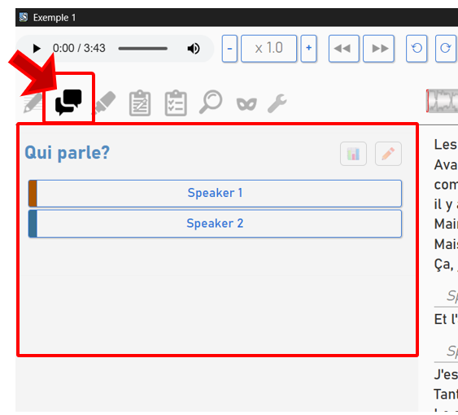
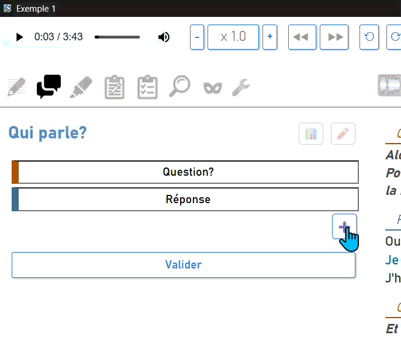
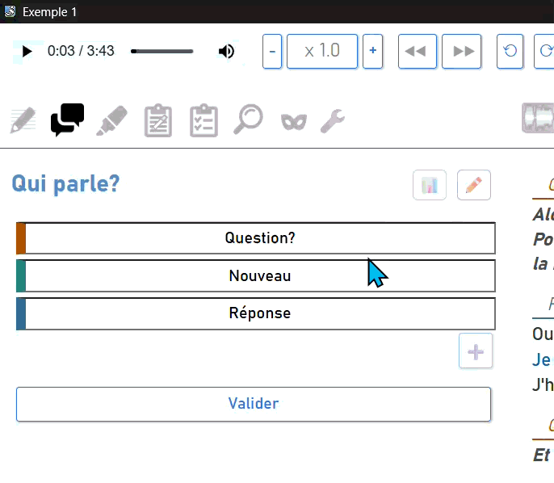
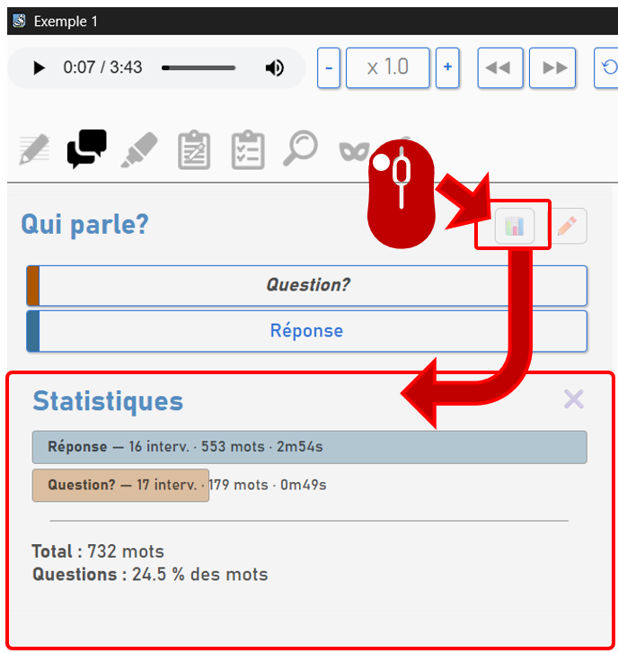

Corriger les tours de parole (mode "Locuteurs")
Ce mode est destiné à gérer les tours de parole. Il vous permet de :
- Gérer les locuteurs (renommer/ajouter).
- Corriger les tours de paroles pour préciser à quel moment chaque locuteur s’exprime.

A l’ouverture, Sonal vous affiche une liste des locuteurs identifiés dans le texte. Ce sont les noms repérés dans les fichiers de transcription lors de l’importation. Pour les fichiers issus de Whisper, les identifiants sont généralement « Speaker » suivi d’un numéro. La première chose à faire est généralement des les renommer.
Renommer les locuteurs
Toutes les modifications de la liste des locuteurs se font en cliquant sur le bouton ✏️ en haut à droite du panneau des locuteurs.
Renommer un locuteur
Les noms des locuteurs deviennent alors des zones éditables. Il suffit de modifier le nom puis de valider.
Identifier les interrogateurs
Il est utile de distinguer les personnes qui posent des questions de celles qui répondent. Cela permettra 1/ d’avoir un formatage qui permette de bien repérer les questions dans le texte, 2/ d’avoir des statistiques sur la dynamique des échanges et 3/ de filtrer les prises de parole dans les analyses lexicométriques (pour se focaliser sur le vocabulaire des questions et non des réponses). Pour repérer un interrogateur ou une interrogatrice, il suffit d’ajouter un « ? » à la fin de son nom.

Ajouter un locuteur
Pour ajouter un locuteur, cliquez sur ➕en bas de la liste. Nommez le dans la zone de texte qui apparaît alors puis validez.

Supprimer un locuteur
Pour supprimer un locuteur, videz la cellule qui contient son nom puis validez.

Attention : Après suppression d’un locuteur, tous les segments qui étaient attribués à ce locuteurs deviennent orphelines et affichent ???.
Affecter un locuteur à un passage
Sonal vous permet très simplement de préciser « qui parle » à quel moment. Il faut commencer par sélectionner le passage concerné puis cliquer sur le nom du bon locuteur dans la liste à gauche. Le plus souvent ce sont des segments entiers qu’il faut réaffecter. Dans ce cas là, il suffit de cliquer sur un mot de la phrase à réaffecter puis de choisir le locuteur. Parfois ce sont seulement certains mots de la phrase. Dans ce cas-là, il faut d’abord sélectionner les mots à la souris puis, ensuite, préciser qui parle.

Statistiques sur les tours de parole
Sonal vous permet d’objectiver la place des différents locuteurs dans l’entretien. Pour ce faire, cliquez sur 📊 en haut à droite du panneau des locuteurs. Vous verrez alors apparaître un volet « statistiques » en dessous de la liste des locuteurs.

Vous aurez ainsi la place (en interventions, en mots et en temps de parole estimé) des différents locuteurs. Information souvent utile : la place prise par la ou les personnes qui interrogent (en % des mots retranscrits).
Naviguer dans les prises de parole d’un locuteur
En survolant le graphique en barres, vous verrez apparaître une loupe qui vous permet de passer de prise de parole en prise de parole dans l’entretien. C’est très efficace pour retrouver une question précise, ou la prise de parole de quelqu’un en particulier dans un focus group par exemple. Cliquez sur la loupe pour sélectionner ce locuteur puis cliquez à nouveau pour passer à la prise de parole suivante.